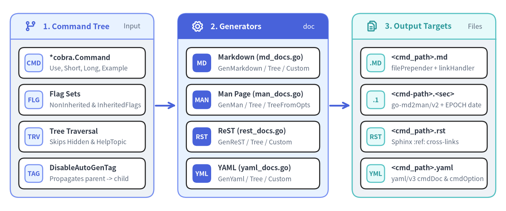
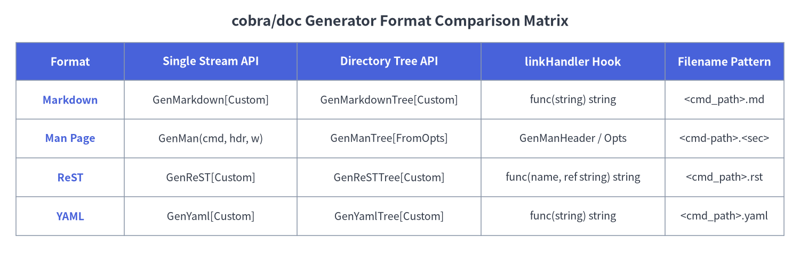

08. Auto-Generated Documentation (cobra/doc)
Package github.com/spf13/cobra/doc inspects a *cobra.Command hierarchy—including command synopses, long descriptions, examples, local and inherited persistent flags, and parent/child relationships—to generate reference documentation in four formats: Markdown, Man Pages (roff), ReStructuredText (ReST), and YAML.

Source Code
from drawlib.canvas import save, setup
from drawlib.icons import phosphor
from drawlib.lines import line
from drawlib.smartarts import CardList, Panel
from drawlib.styles import Styles
setup(width=148, height=62, dpi=150)
# 1. Left Panel: Command Tree & Hooks
p1 = Panel(
"1. Command Tree",
"Input",
style=Styles.Neutral,
header_style=Styles.PrimaryNeutral,
text_style=Styles.PrimaryBold.patch(text_size=11.0),
description_style=Styles.Muted.patch(text_size=9.5),
header_height=7.5,
icon=phosphor.git_branch,
icon_style=Styles.PrimaryBold,
)
p1.draw(xy=(3, 4), width=42, height=54)
ix1, iw1, ih1 = p1.get_content_box(xy=(3, 4), width=42, height=54, padding=(2.5, 2.5))
cl1 = CardList(
style=Styles.White,
text_style=Styles.DarkBold.patch(text_size=10.0),
description_style=Styles.Muted.patch(text_size=9.2),
badge_shape="rounded_rect",
badge_style=Styles.PrimaryNeutral,
badge_text_style=Styles.PrimaryBold.patch(text_size=9.2),
spacing=1.8,
)
cl1.add("*cobra.Command", "Use, Short, Long, Example", badge_text="CMD")
cl1.add("Flag Sets", "NonInherited & InheritedFlags", badge_text="FLG")
cl1.add("Tree Traversal", "Skips Hidden & HelpTopic", badge_text="TRV")
cl1.add("DisableAutoGenTag", "Propagates parent -> child", badge_text="TAG")
cl1.draw(xy=ix1, width=iw1, height=ih1)
line((45.5, 31), (51.5, 31), arrow_head="->", style=Styles.PrimaryBold)
# 2. Middle Panel: 4 Format Generators
p2 = Panel(
"2. Generators",
"doc",
style=Styles.PrimaryNeutral,
header_style=Styles.PrimaryFlat,
text_style=Styles.WhiteBold.patch(text_size=11.0),
description_style=Styles.White.patch(text_size=9.5),
header_height=7.5,
icon=phosphor.gear,
icon_style=Styles.WhiteBold,
)
p2.draw(xy=(52, 4), width=44, height=54)
ix2, iw2, ih2 = p2.get_content_box(xy=(52, 4), width=44, height=54, padding=(2.5, 2.5))
cl2 = CardList(
style=Styles.White,
text_style=Styles.DarkBold.patch(text_size=10.0),
description_style=Styles.Muted.patch(text_size=9.2),
badge_shape="rounded_rect",
badge_style=Styles.PrimaryFlat,
badge_text_style=Styles.WhiteBold.patch(text_size=9.2),
spacing=1.8,
)
cl2.add("Markdown (md_docs.go)", "GenMarkdown / Tree / Custom", badge_text="MD")
cl2.add("Man Page (man_docs.go)", "GenMan / Tree / TreeFromOpts", badge_text="MAN")
cl2.add("ReST (rest_docs.go)", "GenReST / Tree / Custom", badge_text="RST")
cl2.add("YAML (yaml_docs.go)", "GenYaml / Tree / Custom", badge_text="YML")
cl2.draw(xy=ix2, width=iw2, height=ih2)
line((96.5, 31), (102.5, 31), arrow_head="->", style=Styles.PrimaryBold)
# 3. Right Panel: Output Streams & Files
p3 = Panel(
"3. Output Targets",
"Files",
style=Styles.Neutral,
header_style=Styles.SecondaryNeutral,
text_style=Styles.SecondaryBold.patch(text_size=11.0),
description_style=Styles.Muted.patch(text_size=9.5),
header_height=7.5,
icon=phosphor.files,
icon_style=Styles.SecondaryBold,
)
p3.draw(xy=(103, 4), width=42, height=54)
ix3, iw3, ih3 = p3.get_content_box(xy=(103, 4), width=42, height=54, padding=(2.5, 2.5))
cl3 = CardList(
style=Styles.White,
text_style=Styles.DarkBold.patch(text_size=10.0),
description_style=Styles.Muted.patch(text_size=9.2),
badge_shape="rounded_rect",
badge_style=Styles.SecondaryNeutral,
badge_text_style=Styles.SecondaryBold.patch(text_size=9.2),
spacing=1.8,
)
cl3.add("<cmd_path>.md", "filePrepender + linkHandler", badge_text=".MD")
cl3.add("<cmd-path>.<sec>", "go-md2man/v2 + EPOCH date", badge_text=".1")
cl3.add("<cmd_path>.rst", "Sphinx :ref: cross-links", badge_text="RST")
cl3.add("<cmd_path>.yaml", "yaml/v3 cmdDoc & cmdOption", badge_text="YML")
cl3.draw(xy=ix3, width=iw3, height=ih3)
save()
Format Comparison Matrix#
Before calling any generator in github.com/spf13/cobra/doc, note that every top-level generator calls cmd.InitDefaultHelpCmd() and cmd.InitDefaultHelpFlag() so that --help appears accurately in the generated flag tables. Tree generators recursively walk cmd.Commands(), skipping any subcommand where !c.IsAvailableCommand() || c.IsAdditionalHelpTopicCommand().

Source Code
from drawlib.canvas import save, setup
from drawlib.smartarts import Table
from drawlib.styles import Colors, Styles
from drawlib.text import text
setup(width=148, height=50, dpi=150)
text(
(74, 46),
"cobra/doc Generator Format Comparison Matrix",
style=Styles.DarkBold.patch(text_size=13.0),
)
tbl = Table(
cell_style=Styles.White,
text_style=Styles.Dark.patch(text_size=9.5),
header_cell_style=Styles.PrimaryFlat,
header_text_style=Styles.WhiteBold.patch(text_size=10.0),
border_style=Styles.MutedThin,
)
rows = [
["Format", "Single Stream API", "Directory Tree API", "linkHandler Hook", "Filename Pattern"],
["Markdown", "GenMarkdown[Custom]", "GenMarkdownTree[Custom]", "func(string) string", "<cmd_path>.md"],
["Man Page", "GenMan(cmd, hdr, w)", "GenManTree[FromOpts]", "GenManHeader / Opts", "<cmd-path>.<sec>"],
["ReST", "GenReST[Custom]", "GenReSTTree[Custom]", "func(name, ref string) string", "<cmd_path>.rst"],
["YAML", "GenYaml[Custom]", "GenYamlTree[Custom]", "func(string) string", "<cmd_path>.yaml"],
]
tbl.set_style_cell_evenodd(
even_color=Colors.Light,
even_text_style=Styles.Dark.patch(text_size=9.5),
odd_color=Colors.White,
odd_text_style=Styles.Dark.patch(text_size=9.5),
)
tbl.set_style_cell_header(
background_color=Colors.Primary,
text_style=Styles.WhiteBold.patch(text_size=10.0),
)
tbl.set_style_cell(
background_color=Colors.Light,
text_style=Styles.PrimaryBold.patch(text_size=9.5),
rows=[1, 2, 3, 4],
columns=[0],
)
tbl.draw_flexible(
xy=(3, 42),
column_widths=[20, 32, 34, 34, 22],
row_heights=[7.0, 7.2, 7.2, 7.2, 7.2],
data=rows,
align="top_left",
)
save()
funcGenMarkdown (doc/md_docs.go)#
package doc
func GenMarkdown(cmd *cobra.Command, w io.Writer) error
Generates Markdown documentation for a single *cobra.Command and writes it to w. Calls GenMarkdownCustom(cmd, w, func(s string) string { return s }).
Emitted Markdown Structure#
## <cmd.CommandPath()>followed bycmd.Short.### Synopsis—cmd.Long(falls back tocmd.Short), followed bycmd.UseLine()in a fenced code block whencmd.Runnable()is true.### Examples—cmd.Examplein a fenced code block (if non-empty).### Options—cmd.NonInheritedFlags().FlagUsages()in a fenced code block (if non-empty).### Options inherited from parent commands—cmd.InheritedFlags().FlagUsages()in a fenced code block (if non-empty).### SEE ALSO— Bulleted links to the parent command and all available child commands (sorted alphabetically byCommandPath()), formatted as[name](linkHandler(cname + ".md")) - short.- Auto-Gen Footer —
###### Auto generated by spf13/cobra on <DD-Mon-YYYY>unlesscmd.DisableAutoGenTagistrue.
funcGenMarkdownCustom (doc/md_docs.go)#
func GenMarkdownCustom(cmd *cobra.Command, w io.Writer, linkHandler func(string) string) error
Generates Markdown documentation for cmd into w, passing every SEE ALSO target filename (such as "mycli_serve.md") through linkHandler so you can rewrite URLs for static site generators.
funcGenMarkdownTree (doc/md_docs.go)#
func GenMarkdownTree(cmd *cobra.Command, dir string) error
Recursively generates one .md file per command in the cmd tree inside directory dir. Spaces in cmd.CommandPath() are replaced with underscores (_) to form the base filename (e.g., mycli sub -> mycli_sub.md). Equivalent to calling GenMarkdownTreeCustom with an empty filePrepender and an identity linkHandler.
funcGenMarkdownTreeCustom (doc/md_docs.go)#
func GenMarkdownTreeCustom(cmd *cobra.Command, dir string, filePrepender, linkHandler func(string) string) error
Recursively generates .md files in dir with two customization callbacks:
filePrepender(filename string) string: Receives the full output filepath (e.g.,"/docs/mycli_serve.md") and returns a string written to the file before the generated Markdown—ideal for YAML or TOML frontmatter in Hugo, Docusaurus, or MkDocs.linkHandler(name string) string: Receives the default target filename (e.g.,"mycli_serve.md") and returns the URL used in### SEE ALSOlinks.
Example: Generating Hugo Documentation with YAML Frontmatter#
package main
import (
"fmt"
"path/filepath"
"strings"
"github.com/spf13/cobra"
"github.com/spf13/cobra/doc"
)
func generateHugoDocs(rootCmd *cobra.Command, outDir string) error {
rootCmd.DisableAutoGenTag = true
filePrepender := func(filename string) string {
base := filepath.Base(filename)
name := strings.TrimSuffix(base, filepath.Ext(base))
title := strings.ReplaceAll(name, "_", " ")
return fmt.Sprintf("---\ntitle: %q\nslug: %q\n---\n\n", title, name)
}
linkHandler := func(name string) string {
base := strings.TrimSuffix(name, filepath.Ext(name))
return "/cli/" + strings.ToLower(base) + "/"
}
return doc.GenMarkdownTreeCustom(rootCmd, outDir, filePrepender, linkHandler)
}
structGenManHeader (doc/man_docs.go)#
type GenManHeader struct {
Title string
Section string
Date *time.Time
Source string
Manual string
}
Defines the standard Unix man page .TH header metadata used by GenMan, GenManTree, and GenManTreeFromOpts. Missing fields are automatically populated by fillHeader:
| Field | Default When Empty / nil |
Role in .TH Macro |
|---|---|---|
Title |
Uppercase cmd.CommandPath() with spaces replaced by \- |
Man page title (left/right header) |
Section |
"1" (User Commands) |
Man section number (and file extension in GenManTree) |
Date |
SOURCE_DATE_EPOCH env var (if set), else time.Now() ("Jan 2006") |
Center footer date |
Source |
"Auto generated by spf13/cobra" |
Left footer source |
Manual |
"" |
Center header manual title |
[!TIP] Reproducible Builds with
SOURCE_DATE_EPOCH: Ifheader.Dateisniland theSOURCE_DATE_EPOCHenvironment variable is set to a valid Unix timestamp,cobra/docparses it viastrconv.ParseInt(epoch, 10, 64)and formatstime.Unix(unixEpoch, 0)instead oftime.Now().
structGenManTreeOptions (doc/man_docs.go)#
type GenManTreeOptions struct {
Header *GenManHeader
Path string
CommandSeparator string
}
Configuration struct passed to GenManTreeFromOpts:
Header: Pointer toGenManHeadertemplate (copied per command soTitlecan be reset for each subcommand).Path: Target directory where<basename>.<Section>files are written.CommandSeparator: String used to join command path tokens in the output filename (GenManTreesets this to"-").
funcGenMan (doc/man_docs.go)#
func GenMan(cmd *cobra.Command, header *GenManHeader, w io.Writer) error
Generates a single Unix roff man page for cmd and writes it to w. If header == nil, an empty &GenManHeader{} is allocated and populated with defaults. Internally builds intermediate Markdown (with sections NAME, SYNOPSIS, DESCRIPTION, OPTIONS, OPTIONS INHERITED FROM PARENT COMMANDS, EXAMPLE, SEE ALSO, HISTORY) and compiles it to roff via github.com/cpuguy83/go-md2man/v2/md2man.Render.
funcGenManTree & func GenManTreeFromOpts (doc/man_docs.go)#
func GenManTree(cmd *cobra.Command, header *GenManHeader, dir string) error
func GenManTreeFromOpts(cmd *cobra.Command, opts GenManTreeOptions) error
Recursively generates a roff man page file for cmd and every available subcommand:
GenManTree(cmd, header, dir)delegates directly toGenManTreeFromOpts(cmd, GenManTreeOptions{Header: header, Path: dir, CommandSeparator: "-"}).- Output filenames replace spaces in
cmd.CommandPath()withopts.CommandSeparator("-") and append.+header.Section(defaulting to.1, e.g.,mycli-completion-zsh.1).
header := &doc.GenManHeader{
Title: "MYCLI",
Section: "1",
Source: "MyCLI v1.10.2",
Manual: "MyCLI User Manual",
}
if err := doc.GenManTree(rootCmd, header, "./man/man1"); err != nil {
log.Fatal(err)
}
funcGenReST & func GenReSTCustom (doc/rest_docs.go)#
func GenReST(cmd *cobra.Command, w io.Writer) error
func GenReSTCustom(cmd *cobra.Command, w io.Writer, linkHandler func(string, string) string) error
Generates ReStructuredText (.rst) documentation for a single command cmd and writes it to w:
- Emits a Sphinx reference anchor
.. _<cmd_path_underscored>:at the top of the document. - Notice that
GenReSTCustom'slinkHandlertakes two string arguments:func(name, ref string) string, wherenameis"<cname> - <short>"andrefis the underscored reference target (e.g.,"mycli_serve"). GenReSTusesdefaultLinkHandler, which formats Sphinx cross-references as* :ref:`<name> <<ref>>`.
funcGenReSTTree & func GenReSTTreeCustom (doc/rest_docs.go)#
func GenReSTTree(cmd *cobra.Command, dir string) error
func GenReSTTreeCustom(cmd *cobra.Command, dir string, filePrepender func(string) string, linkHandler func(string, string) string) error
Recursively generates <cmd_path_underscored>.rst files inside dir for cmd and all available subcommands. GenReSTTree passes an empty filePrepender and the Sphinx :ref: defaultLinkHandler.
funcGenYaml & func GenYamlCustom (doc/yaml_docs.go)#
func GenYaml(cmd *cobra.Command, w io.Writer) error
func GenYamlCustom(cmd *cobra.Command, w io.Writer, linkHandler func(string) string) error
Serializes cmd's metadata and flags into structured YAML via go.yaml.in/yaml/v3 and writes it to w.
Emitted YAML Schema (cmdDoc & cmdOption)#
| YAML Key | Type | Populated From |
|---|---|---|
name |
string |
cmd.CommandPath() |
synopsis |
string,omitempty |
cmd.Short |
description |
string,omitempty |
cmd.Long |
usage |
string,omitempty |
cmd.UseLine() (only if cmd.Runnable()) |
options |
[]cmdOption,omitempty |
cmd.NonInheritedFlags() (name, shorthand, default_value, usage) |
inherited_options |
[]cmdOption,omitempty |
cmd.InheritedFlags() (name, shorthand, default_value, usage) |
example |
string,omitempty |
cmd.Example |
see_also |
[]string,omitempty |
Parent and sorted child entries formatted as "<CommandPath> - <Short>" |
[!NOTE] Even though
GenYamlCustomandGenYamlTreeCustomaccept alinkHandler func(string) stringparameter for API symmetry withGenMarkdown*, the internal implementation indoc/yaml_docs.gopopulatessee_alsodirectly as"<CommandPath> - <Short>"and does not emit an auto-gen footer tag.
funcGenYamlTree & func GenYamlTreeCustom (doc/yaml_docs.go)#
func GenYamlTree(cmd *cobra.Command, dir string) error
func GenYamlTreeCustom(cmd *cobra.Command, dir string, filePrepender, linkHandler func(string) string) error
Recursively writes <cmd_path_underscored>.yaml files into dir for cmd and all available subcommands, optionally prepending filePrepender(filename) to each file.
configCommand.DisableAutoGenTag (command.go)#
type Command struct {
// DisableAutoGenTag, if true, stops the documentation generator from
// adding a trailing "Auto generated by spf13/cobra..." tag to the document.
DisableAutoGenTag bool
// ...
}
When cmd.DisableAutoGenTag = false (the default), GenMarkdown*, GenMan*, and GenReST* append an auto-generation timestamp footer containing time.Now().Format("2-Jan-2006"):
- Markdown:
###### Auto generated by spf13/cobra on 2-Jan-2006 - Man Pages:
.SH HISTORY\n2-Jan-2006 Auto generated by spf13/cobra - ReST:
:Auto generated by spf13/cobra on 2-Jan-2006:
Setting rootCmd.DisableAutoGenTag = true on the root command suppresses this footer across the entire command tree (because hasSeeAlso / genMarkdown / genMan / genReST propagate c.DisableAutoGenTag = cmd.DisableAutoGenTag to every child command during traversal). This prevents noisy daily Git diffs when checking generated documentation into version control.
Cross-References#
- 01. Command Struct & Configuration Fields —
Commandmetadata fields (Use,Short,Long,Example,Hidden,DisableAutoGenTag) consumed bycobra/doc. - 02. Execution Engine & Lifecycle Hooks —
CommandPath(),IsAvailableCommand(), andIsAdditionalHelpTopicCommand()used during recursive tree generation. - 03. Flags, FlagSets & Relational Groups —
NonInheritedFlags()andInheritedFlags()rendered into documentation option tables. - 07. Help, Usage, Templates & Global Configuration —
InitDefaultHelpCmd()andInitDefaultHelpFlag()invoked automatically bycobra/docgenerators.